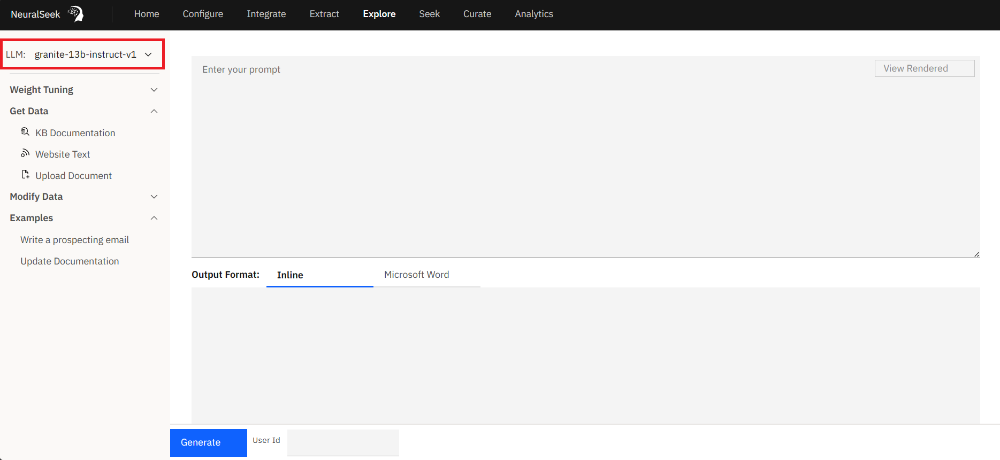
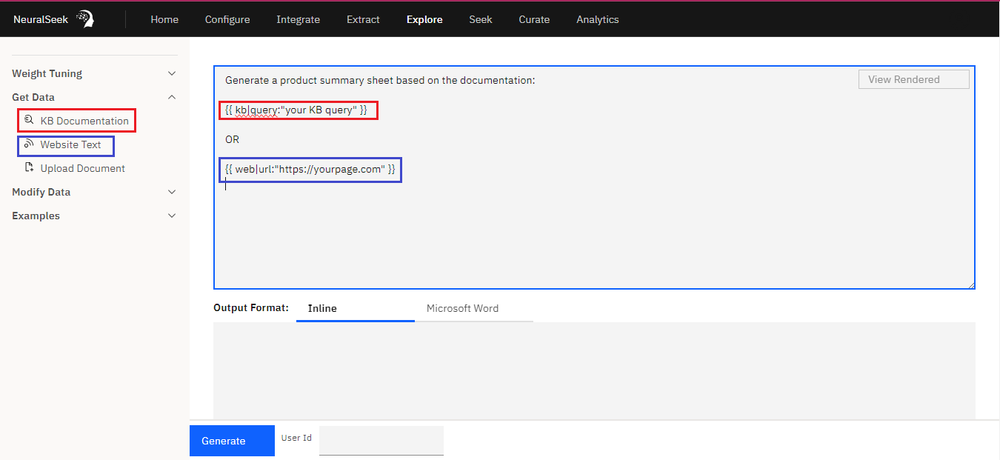
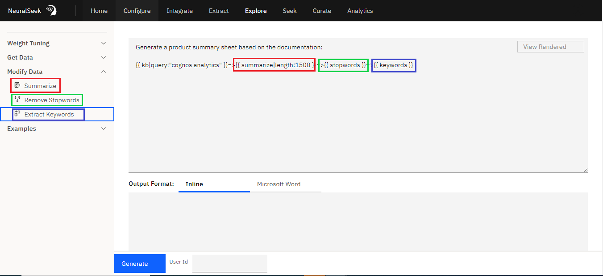
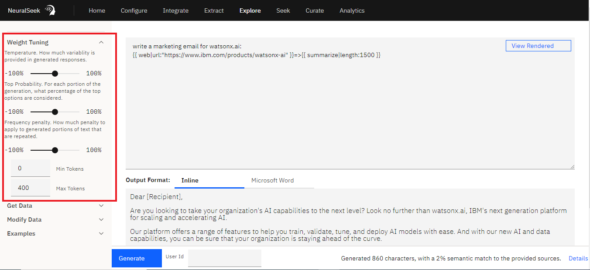
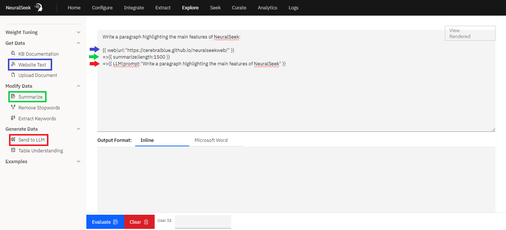
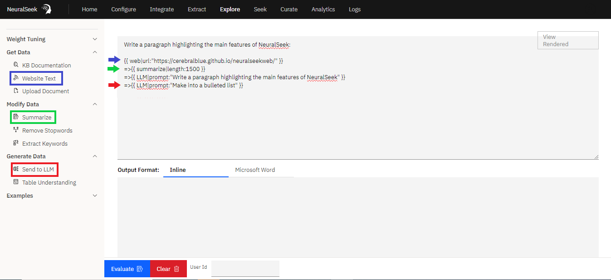
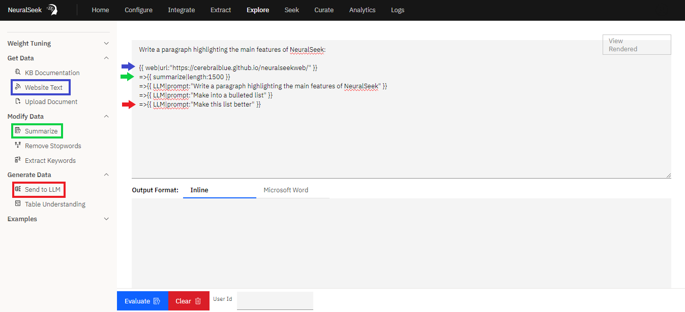
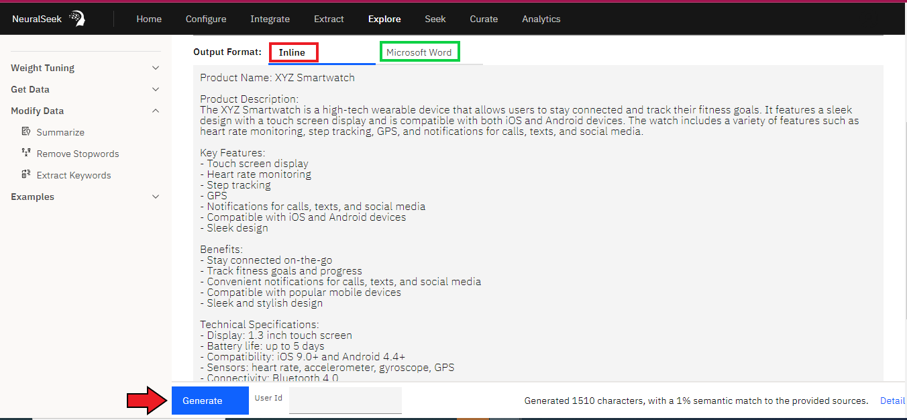

Overview
What is it?
NeuralSeek offers a feature called "Explore" which is a versatile and innovative platform, offering an open-ended playground for retrieval augmented generation. It empowers users to seamlessly integrate their preferred Language Model (LLM), select from a range of data sources including Knowledge Bases, websites, local files, or typed text, and employ the NeuralSeek Template Language (NTL) markup for dynamic content retrieval. Notably, "Explore" enhances data by incorporating features like summarization, stopwords removal, and keyword extraction, all while providing expert guidance with LLM prompt syntax and base weighting. With the ability to output results to an editor or directly to a Word document, "Explore" delivers a powerful and user-friendly experience, making it a standout feature in content generation and retrieval.
Why is it important?
The "Explore" feature within NeuralSeek is important for several reasons:
Efficient Content Retrival
"Explore" simplifies the process of accessing and retrieving content from various sources. This efficiency is crucial for anyone who relies on accurate and relevant information.
Enhanced Data Quality
The feature enhances data quality by providing tools for summarization, stopwords removal, and keyword extraction. This ensures that the retrieved content is refined, concise, and tailored to the user's needs, saving time and effort in manual data preprocessing.
User-Friendly Interface
"Explore" offers a user-friendly interface that makes interacting with Language Models and crafting dynamic prompts accessible to a broader audience. This accessibility is vital for individuals who may not have advanced technical skills but still require the benefits of advanced language models.
Expert Guidance
This feature provides users with expert guidance by offering correct LLM prompt parameters and model-specific base weights. This guidance helps users achieve optimal results without the need for in-depth knowledge of language model intricacies.
Output Flexibility
The ability to output results to an editor or directly to a Word document enhances flexibility and convenience for users, allowing them to seamlessly integrate the generated content into their workflows.
Semantic Scoring
The incorporation of a Semantic Scoring model allows users to assess the relevance and alignment of generated content with their specific requirements. This feature adds a layer of precision and control to the content generation process.
How does it work?
"Explore" streamlines the interaction with Language Models, making it accessible and user-friendly while providing powerful tools for content retrieval and enhancement. Users can seamlessly integrate retrieved content into their workflows with precision and control, making it a valuable asset for various professional fields. Here's a step-by-step explanation of how it works:
Language Model Selection

Users on a Bring You Own Large Language Model plan (BYOLLM) begin by selecting their desired LLM(s) to use with "Explore" in the menu setting.
Dynamic Prompt Creation
Users craft dynamic prompts using a combination of regular words and NeuralSeek Template Language (NTL) markup. These prompts serve as instructions to the LLM for content retrieval and generation.
Add Content
Users can easily retrieve content from various sources with just a point-and-click:

- Knowledge Bases (KB): Users can query KBs and retrieve information based on specific search terms or queries.
- Websites: Users can extract data from websites, fetching content as needed.
- Local Files: Content from local files such as PDFs, Docs, CSVs, XLS, and TXT can be accessed and used.
- Typed Text: Users can input their own text, integrating it seamlessly into the content generation process.
Data Enhancement
This features enhances retrieved data by:

- Summarization: It can summarize lengthy content, condensing it into a more concise format.
- Stopwords Removal: Unnecessary words are removed, further refining the content.
- Keyword Extraction: Important keywords or phrases are extracted, aiding in content analysis and understanding.
Optimization

"Explore" provides users with the correct LLM parameters and base weighting across models, ensuring that prompts are formulated effectively for optimal results.
Content Management
NeuralSeek's "Explore" feature offers tools that can greatly benefit internal content management processes. Users are able to seamlessly make multiple interactions with the LLM in succession and generate insightful responses about source data tables utilizing these tools:
Send to LLM
  
Within the "Generate Data" sidebar option of the new Explore feature in NeuralSeek, users can simply instruct the Language Model (LLM) by providing prompts in natural language to generate desired outputs. What sets this feature apart is its capacity for looped or chained LLM calls. This simply means that users can make multiple requests or interactions with the LLM one after another. This eliminates the need to start a new separate interaction each time. This capability to chain or loop LLM calls can be valuable for tasks that require iterative or sequential interactions with the language model. Overall, the "Send to LLM" feature improves efficiency, streamlines processes, and can be utilized in various applications.
Table Understanding


Within the "Generate Data" sidebar option of NeuralSeek's Explore feature is the "Table Understanding" feature. Users will start by uploading a spreadsheet, either an Excel or CSV file. Then, the user is able to generate insightful responses about the source data by providing queries in natural language through the "Table Understanding" prompt. For example, the user uploads an Excel file containing diverse data with the goal of writing a memo highlighting noteable data points. Utilizing NeuralSeek's point-to-click feature, the user will proceed to click to add the data file, click to intitate the Table Understanding prompt, add a query, then click to evaluate results. NeuralSeek undertakes a comprehensive examination of the provided data to output an accurate response. At the bottom of the screen, NeuralSeek provides a confidence percentage, accompanied by the statement, "Table Understanding reports a confidence level of X%.". This percentage is based on how much the system trusts the answer it gave you based on what it found in the data.
Output Options
Users choose where the generated content is directed:

- Editor: Content can be viewed and edited directly within the built-in editor.
- Word Document: Users can export the generated content directly to a Word document for further use.
Semantic Scoring
The generated content is evaluated against a Semantic Scoring model. This assessment provides users with insights into the relevance and alignment of the generated content with their specific needs or preferences.
A Practical Use Case
Consider a scenario where you need to extract valuable information from a webpage. With "Explore," you can create an NTL prompt that retrieves the essential content, eliminates irrelevant material, summarizes it to approximately 1500 characters, and sends it to the LLM: {% raw %}
write a marketing email for watsonx.ai
Here is some documentation:
{{ web|url:"https://www.ibm.com/products/watsonx-ai" }}=>{{ summarize|length:1500 }}
{% endraw %}
Explore has the ability to perform Knowledge Base (KB) queries while dynamically configuring scoring parameters and snippet overrides. It then seamlessly transfers the processed data to the Language Model (LLM). {% raw %}
We need to update documentation to talk about our new release. The new release adds a feature called generative dashboarding. It can be accessed from the file menu.
Here is the old documentation to update:
{{ kb|query:"cognos analytics"|snippet:2000|scoreRange:0.1 }}
{% endraw %}